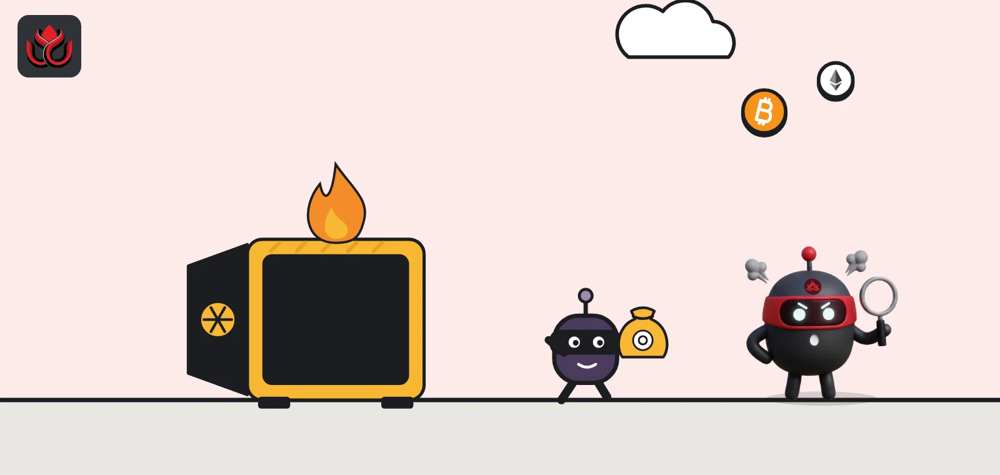
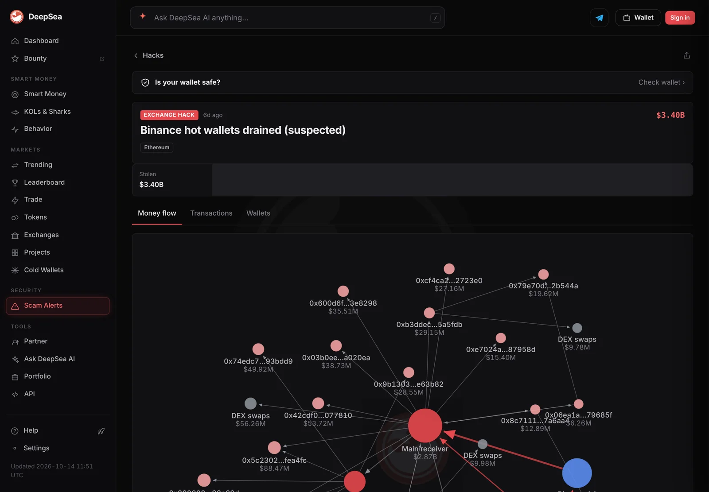
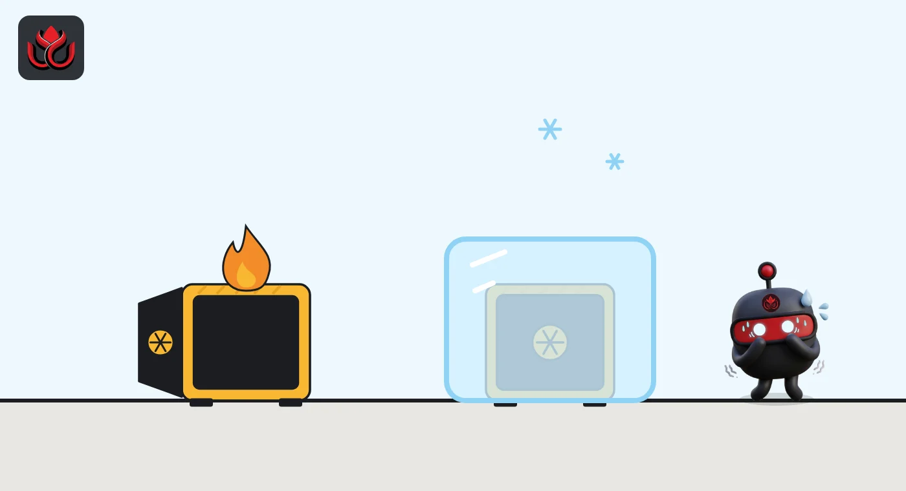
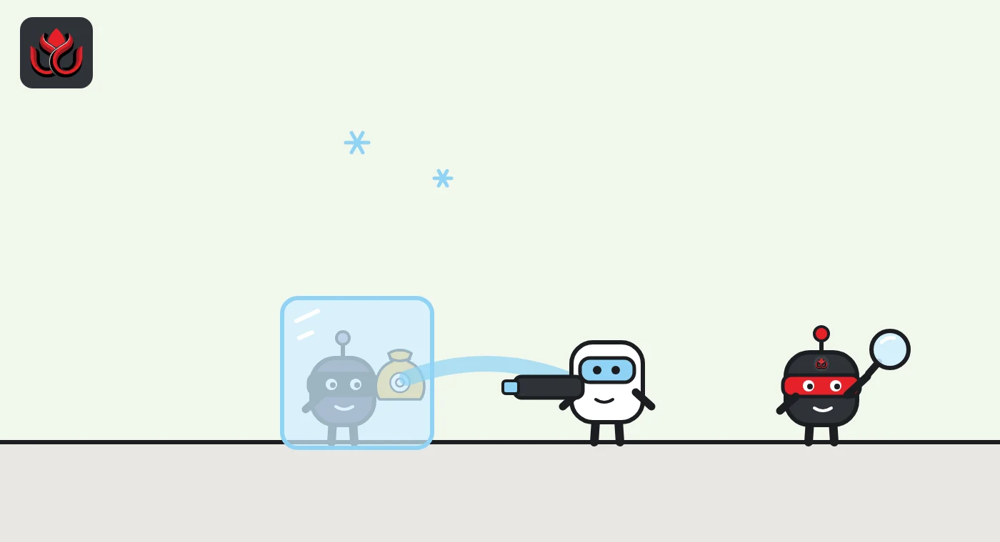

How crypto exchange hacks happen: the weak spot is rarely the key itself
Most exchange hacks start in hot wallets, the online wallets that pay out withdrawals. Attackers rarely break the cryptography. They get into the systems and people that approve transactions, then rush to swap stablecoins before issuers can freeze them.

Key points
- Exchanges keep a small share of funds in online hot wallets so withdrawals are fast. Those wallets are where nearly every large exchange hack starts.
- Attackers usually target the signing setup around a wallet: staff logins, internal servers, third-party software or the way transactions get approved.
- In 2026's two biggest cases, Bitget says no private key was stolen, and Binance's attacker used pre-signed authorizations to take over a hot wallet.
- Stolen stablecoins can be frozen by their issuers, so attackers dump them fast for ether or bitcoin, which no company can freeze.
 What DeepSea's data shows
What DeepSea's data shows
DeepSea's page on the Binance breach shows how a hot wallet can be emptied without breaking any cryptography. It says the Binance 14 hot wallet on Ethereum was taken over on October 29 through an EIP-7702 delegation installed minutes earlier by an address funded through a coin mixer, then emptied in a single transaction.
DeepSea puts the Ethereum loss at $3.40 billion. Its tracker shows the attacker split funds across 133 wallets and converted swapped funds mostly into ether. It also shows that funds from this hack and from the $387.50 million Bitget theft reached the same address, linking the two cases on-chain.

Data: DeepSea (desea.io), checked November 2, 2026, 7:59 a.m. ET.
What counts as an exchange hack?
An exchange hack is when someone without permission moves crypto out of wallets that a trading platform controls. Customers do not hold the keys to those wallets. The exchange does, and it owes customers the balance shown in their accounts.
That makes an exchange a single large target. The biggest theft on record hit Binance on October 29, 2026. Blockchain analytics firm TRM Labs puts the total at about $6.36 billion across 10 blockchains. A month earlier, Bitget lost about $388 million, its incident page says. LC Insight covered both in detail: Binance and Bitget.
What is the difference between a hot wallet and a cold wallet?
A hot wallet is connected to the internet, so its keys can sign transactions automatically. Exchanges need one to pay withdrawals within minutes. A cold wallet keeps its keys offline, often on dedicated hardware in a secure location. Moving money out of it takes manual steps and several people, which is slow but much harder to attack remotely.
Some exchanges add a middle layer, a warm wallet, used to refill the hot wallet. Bitget's incident page says the September 24 transfers left "certain hot wallets and warm wallets" from 12 addresses, and that cold wallets were not affected.
The idea is simple: keep only what you need for a day's withdrawals online. If the hot wallet is drained, the loss should be a slice of total reserves, not everything. Smaller platforms follow the same model; the crypto casino Duelbits, for example, lost money from its hot wallets in September and talked about refilling them.

How do attackers get into hot wallets?
The math behind crypto keys is very hard to break, so attackers go around it. Security firm SlowMist's Hacked database classifies incidents by method, and categories like private key leaks, supply chain attacks and compromised staff devices show up again and again. Its entry for Binance lists the method as a compromised DevOps engineer's laptop, though Binance said on October 30 that its later investigation had found additional points of breach and no evidence that wallet private keys leaked.
Common paths include:
- Stolen keys. If malware or an insider gets a hot wallet's private key, the attacker can sign anything.
- Stolen staff access. Engineers and operators have powerful permissions. One hacked laptop or login can be enough to reach wallet systems.
- Third-party software. Exchanges run tools from outside vendors. A flaw in one can open a door no one was watching.
- Fake approvals. Instead of stealing a key, attackers make the exchange's own system sign a transaction it should not.
What is signing infrastructure, and why is it the real target?
Signing infrastructure is everything between a withdrawal request and a signed blockchain transaction: the servers that create withdrawal orders, the risk checks, the approval rules, the key storage and the people who can change any of it. If an attacker controls that chain, the key never has to leave its vault.
Bitget is the clearest case. Its incident page says the attacker used a previously unknown flaw, a zero-day, in a third-party security product to reach internal management systems and take high-privilege staff credentials. The attacker then wrote forged withdrawal commands straight into the wallet system, skipping risk controls. Bitget states that "Private keys were not compromised."
Binance's attacker used a newer trick. TRM Labs says the attacker relied on EIP-7702, a 2025 Ethereum feature that lets a wallet hand its behavior to a smart contract through a signed authorization. The attacker submitted 50 pre-signed authorizations from a Binance hot wallet, covering 50 consecutive transaction numbers, so one was sure to be valid. Each pointed to a sweeper contract the attacker controlled.

What happens to the stolen money?
Speed matters. Stablecoin issuers such as Tether and Circle can freeze their tokens at a given address. So attackers sell stablecoins first. In the Binance case, TRM says the attacker sold about 325 million USDT for about 122,300 ETH at a discount of more than 10%, and borrowed ETH against USDT on lending apps.
Issuers still caught a lot. TRM counts about $1.77 billion in USDT frozen by Tether and about $825 million in USDC frozen by Circle. But TRM also says the attacker still holds more than 420,000 ETH and 18,270 BTC, about $2.4 billion, which no issuer can freeze.
After that, the usual pattern is to split funds across many wallets, swap and bridge between chains, and try to cash out through exchanges or over-the-counter desks, where accounts can still be stopped.
Binance theft: frozen vs. out of reach
US$ billion
Source: TRM Labs, accessed November 2, 2026
How do exchanges try to stop a hack in progress?
Prevention fails sometimes, so detection matters. Exchanges compare what their wallets hold with what their own records say customers own. When the two stop matching, that is a sign money is leaving without a real withdrawal behind it.
In Bitget's case, the incident page says the first unauthorized transfers left at 2:31 p.m. ET on September 24, and the reconciliation system flagged anomalies at 3:05 p.m. ET, 34 minutes later. The risk system then blocked withdrawals across the platform. Those 34 minutes were enough to move about $388 million across 12 addresses, which shows how fast a drain runs once it starts.
Other defenses work before money moves: splitting approval power so no single login can send funds, limiting how much a hot wallet can send per hour, and treating outside software as a possible entry point. The October 29 attack on Polymarket, which came through a vendor's script, led that platform to promise version pinning and sandboxing for third-party code. The same logic applies to exchanges.
Who pays when an exchange is hacked?
It depends on the exchange's reserves and promises, not on any law that applies everywhere. Bitget runs a Protection Fund, a reserve for platform-wide losses, and says the financial impact will be covered by that fund and not passed on to user balances. Its incident page also offers a bounty of 5% of any amount frozen or recovered with outside help.
When an exchange covers the loss from its own money, customer balances stay whole. When it cannot, customers can end up as creditors in a long bankruptcy. Hardware wallet maker Ledger notes that if a platform holding your keys is breached, your crypto can be stolen, and that self-custody avoids losing crypto through a platform hack. It brings different risks of its own, such as losing your recovery phrase.
LC Insight analysis
This section is our reading of the facts above, not a statement of fact.
- We think the lesson of 2026 is that key storage is no longer the weak point. Both big cases came through the systems and people around the keys, so audits that only check the vault miss the door.
- The real risk for customers is the size of the exchange's reserves compared with its hot wallets. A platform that can absorb a loss from its own funds is very different from one that cannot, and few publish enough data to tell.
What's next
- Full technical reports from Binance and Bitget
- Whether exchanges limit EIP-7702-style delegation on their hot wallets
- How much of the parked ether from the Binance theft reaches exchanges
Frequently asked questions
Are cold wallets ever hacked?
It is much rarer, because their keys never touch the internet. In the Bitget case the exchange says cold wallets were not affected; only hot and warm wallets were drained.
Does a hacked exchange mean my account password was stolen?
Usually not. Exchange hacks generally hit the company's own wallets, not individual logins. Customer balances are an IOU from the exchange, so the question is whether it can cover the loss.
Why do hackers swap stablecoins so quickly?
Because issuers like Tether and Circle can freeze their tokens. In the Binance case, TRM Labs counts about $2.6 billion in USDT and USDC frozen, while ether and bitcoin cannot be frozen by any company.
Was North Korea behind the 2026 exchange hacks?
For Binance, TRM Labs attributes the attack to North Korea's TraderTraitor group with high confidence, and the FBI <a href="https://x.com/FBICyberBranch/status/2116660730745299426">said on October 31</a> that North Korea was responsible, calling the activity "TraderTraitor." Bitget's own incident page names no attacker.
Disclaimer. This article is based on public information and the sources listed below as of the update time shown. It is for information only and is not investment, legal or tax advice. Figures may change as companies and authorities publish new data.
Sources
- Bitget, Security incident page (last updated October 13, 2026)
- TRM Labs, North Korea steals USD 6.36 billion from Binance (accessed November 2, 2026)
- SlowMist Hacked database (accessed November 2, 2026)
- Ledger Academy, How crypto gets stolen and how to avoid it
- Polymarket status page, Security incident: 3rd party vendor compromised (postmortem, October 30, 2026)
- Binance on X, Security Incident | Recovery Update #2 (October 30, 2026)